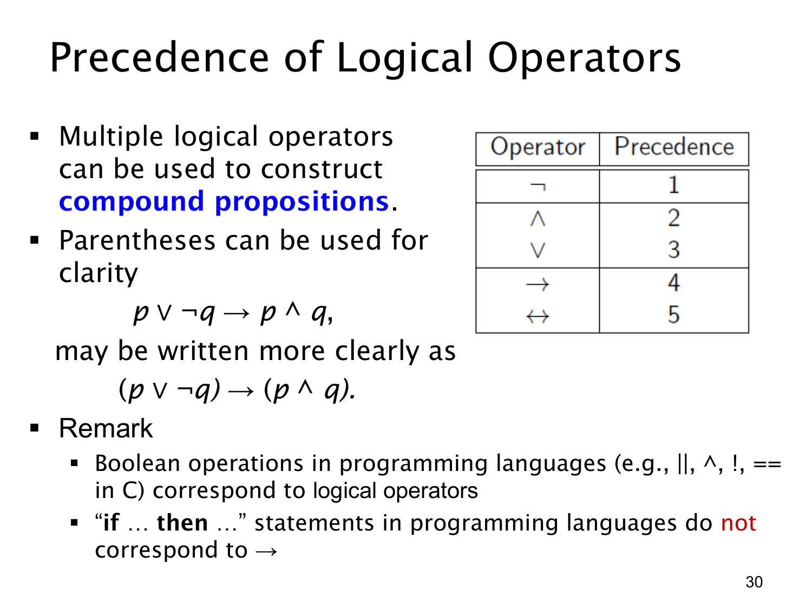

L1.1 · 第 30 页讲解原文
查看这一页课件

多个逻辑运算符：先确定括号怎么分
一个复合命题（compound proposition）可以同时使用多个逻辑运算符。若不加括号，就要依课件给出的优先级（precedence）决定先计算哪一部分。表中的数字越小，优先级越高：
- 否定 ¬；
- 合取 ∧；
- 析取 ∨；
- 蕴含 →；
- 双条件 ↔。
例如课件的 p∨¬q→p∧q，按这些规则应读成
(p∨¬q)→(p∧q).
先对 q 取否定，再形成左右两侧的析取、合取，最后判断整个蕴含。写出括号通常更清楚，尤其在跨教材或写程序时，不能假设所有环境都采用完全相同的优先级。
课件还联系编程中的布尔运算：在适当的布尔值语境下，! 对应否定，|| 对应“或”，^ 可表示异或，== 比较两个布尔值是否相同。不过，程序语言的 if (...) 是控制执行哪段代码的语句，并非命题逻辑中自身有真值的 p→q。数学条件句与程序分支有联系，但不能直接当成同一种对象。